건축산업기사 (2004-08-08 기출문제)
1과목: 건축계획
1. 사무소건축에서 화장실의 위치에 대한 설명 중 부적당한 것은?
- 각 사무실에서 동선이 간단할 것
- 계단실, 홀 등에 근접시킬 것
- 집중해 있지 말고 되도록 각 층의 3개소 이상에 분산시킬 것
- 각 층마다 공통의 위치에 있을 것
(정답률: 80%)

2. 사무소건축의 엘리베이터 배치계획으로 옳지 않은 것은?
- 주요출입구, 홀에 직접 면해서 배치할 것
- 외래자에게 직접 잘 알려질 수 있는 위치일 것
- 엘리베이터 홀은 출입구문에 바싹 접근해 있을 것
- 계단과 엘리베이터는 가능한 한 접근시킬 것
(정답률: 65%)
3. 메조네트(maisonette)형 아파트의 특징이 아닌 것은?
- 엘리베이터 정지층수가 적다.
- 복도가 없는 층이 생긴다.
- 통로 면적이 감소된다.
- 소규모 주택에는 면적면에서 유리하다.
(정답률: 60%)
4. 부엌의 작업 순서에서 작업의 삼각형(working triangle)에 속하지 않는 것은?
- 싱크
- 레인지
- 냉장고
- 테이블
(정답률: 67%)
5. 다음 중 상점의 파사드 형식을 패쇄형으로 할 경우 가장 적합한 상점은?
- 빵집
- 귀금속상점
- 서점
- 지물포
(정답률: 알수없음)
6. 오피스 랜드스케이프(office landscape)계획에 대한 설명으로 옳지 않은 것은?
- 외부 조경면적을 최대로 할 수 있다.
- 배치를 의사전달과 작업흐름의 실제적 패턴에 기초를 둔다.
- 공간을 절약할 수 있다.
- 커뮤니케이션의 융통성이 있다.
(정답률: 알수없음)
7. 다음 설명 중 옳지 않은 것은?
- 인보구는 어린이 놀이터가 중심이 된다.
- 근린분구의 중심시설로는 도서관, 병원 등이 있다.
- 근린주구는 초등학교가 중심이 된다.
- 페리(C.A.Perry)의 근린주구 이론에서 중심시설은 교회와 커뮤니티 센터이다.
(정답률: 40%)
8. 아파트 건축을 평면상 분류할 경우 각각의 특색에 대한 설명으로 옳지 않은 것은?
- 홀형 : 프라이버시가 좋고 통행부 면적이 작다.
- 편복도형 : 복도가 개방형이므로 각호의 통풍 및 채광상 양호하다.
- 중복도형 : 프라이버시가 좋지 않으며 시끄럽다.
- 집중형 : 복도 부분에 있어 채광, 통풍이 좋다.
(정답률: 65%)
9. 일반적으로 방적 공장들은 무창공장으로 설계되는데 그 이유 중 틀린 것은?
- 온ㆍ습도를 균일하게 유지할 수 있다.
- 조도를 일정하게 하는데 유리하다.
- 유창공장에 비하여 건설비가 싸다.
- 공장 내에서 발생하는 소음을 외부로 확산시킨다.
(정답률: 65%)
10. 주택 평면계획에서 거실의 계획에 관한 설명으로 가장 부적당한 것은?
- 개방된 공간에서 벽면의 기술적인 활용과 자유로운 가구의 배치로서 독립성이 유지되도록 한다.
- 거실의 위치는 가족의 단란이 될 수 있는 곳이 좋다.
- 거실과 정원은 유기적으로 시각적 연결을 하여 유동적인 감각을 갖게 한다.
- 거실은 평면계획상 통로나 홀로서 사용되는 방법의 평면배치가 아주 좋다.
(정답률: 55%)
11. 사무소건축의 코어에 관한 설명으로 적당하지 않은 것은?
- 코어는 구조내력벽으로 이용할 수 있다.
- 코어 내의 각 공간이 각층 마다 공통의 위치에 있게 한다.
- 건물내의 설비시설을 집중시킬 수 있다.
- 대규모 건물의 코어는 보행거리를 평균화하기 위해 한쪽으로 편중하는 것이 좋다.
(정답률: 60%)
12. 학교 운영방식 중 교과교실형(V형)에 대한 설명으로 옳은 것은?
- 교실수는 학급수에 일치한다.
- 일반교실이 각 학급에 하나씩 배당되고 그 외에 특별 교실을 갖는다.
- 모든 교실이 특정한 교과를 위해 만들어진다.
- 능력에 따라 학급 또는 학년을 편성하는 방법이다.
(정답률: 28%)
13. 사회학자 숑바르 드 로브(Chombard de Lawve)가 설정한 주거면적의 한계기준과 병리기준의 값으로 옳은 것은?
- 한계기준 : 14m2/인, 병리기준 : 8m2/인
- 한계기준 : 8m2/인, 병리기준 : 14m2/인
- 한계기준 : 16m2/인, 병리기준 : 14m2/인
- 한계기준 : 8m2/인, 병리기준 : 16m2/인
(정답률: 42%)
14. 쇼윈도우 유리면의 반사방지 방법으로 적당하지 않은 것은?
- 차양을 설치하여 외부에 그늘을 준다.
- 특수한 경우에는 곡면유리를 사용한다.
- 쇼윈도 안의 조도를 외부, 즉 손님이 서 있는 쪽보다 어둡게 한다.
- 유리를 사면으로 설치한다.
(정답률: 79%)
15. 상점의 판매형식 중 대면 판매에 대한 설명으로 옳은 것은?
- 상품의 선택과 충동적 구매가 쉽다.
- 진열면적이 커서 상품에 친근감이 있다.
- 판매원의 위치가 정확하고 포장이 편리하다.
- 양복, 침구, 서적, 운동용구점에 일반적으로 사용한다.
(정답률: 54%)
16. 1주간의 평균수업시간이 35시간인 어느 학교에서 제도실이 사용되는 시간은 1주에 28시간인데, 이 중 10시간은 구조강의를 위해 사용된다면, 제도실의 이용률과 순수율은 각각 얼마인가?
- 이용률 : 51%, 순수율 : 40%
- 이용률 : 80%, 순수율 : 29%
- 이용률 : 80%, 순수율 : 51%
- 이용률 : 80%, 순수율 : 64%
(정답률: 50%)
17. 공장배치계획에 관한 설명으로 옳지 않은 것은?
- 장래의 확장계획을 고려한다.
- 견학자를 위한 동선을 고려한다.
- 중요한 작업은 공정상 유리한 위치에 둔다.
- 생산, 관리, 연구, 후생 등의 시설은 집중 배치시킨다.
(정답률: 54%)
18. 다음 그림에서 방위를 고려한 음식점의 위치로 가장 알맞은 곳은?
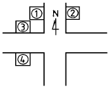
- ①
- ②
- ③
- ④
(정답률: 55%)
19. 주택의 동선(動線)계획에 관한 기술 중 옳지 않은 것은?
- 개인, 사회, 가사노동권의 3개 동선을 서로 분리하여 간섭이 없도록 한다.
- 주부의 가사노동 단축을 위해 평면에서의 주부의 동선을 짧게 한다.
- 동선에는 공간이 필요하다.
- 가사노동의 동선은 북쪽에 오는 것이 좋다.
(정답률: 58%)
20. 고층사무소 건축의 기준층 평면형태를 한정시키는 요소와 가장 관계가 먼 것은?
- 구조상 스팬의 한도
- 덕트, 배관, 배선 등 설비시스템상의 한계
- 방화구획상 면적
- 오피스 랜드스케이핑에 의한 가구배치
(정답률: 60%)
2과목: 건축시공
21. 목재의 접합방법에 대한 설명이 잘못된 것은?
- 맞댄이음은 두재가 덧판에 의하여 부재의 응력을 모두 전달할 수 있다.
- 따낸 이음은 단면의 감소가 발생하므로 부재응력을 전부 전달할 수 없다.
- 맞춤은 수평재와 수직재를 각을 지어 맞추는 것이다.
- 쪽매는 사용재를 길이방향으로 접합하는 방법이다.
(정답률: 36%)
22. 콘크리트 보양방법 중 초기강도가 크게 발휘되어 거푸집을 빨리 제거할 수 있는 방법은?
- 살수보양
- 수중보양
- 피막보양
- 증기보양
(정답률: 알수없음)
23. 가설공사에서 벤치마크에 대한 설명으로 틀린 것은?
- 건물의 높이 및 위치의 기준이 되는 표식이다.
- 이동하는데 있어서 편리하도록 설치한다.
- 건물의 위치 결정에 편리하고 잘 보이는 곳에 설치한다.
- 높이의 기준점은 건물 부근에 2개소 이상 설치한다.
(정답률: 67%)
24. 공사기간 단축기법으로 주공정상의 소요 작업중 비용구배 (cost slope)가 가장 작은 요소작업부터 단위 시간씩 단축해 가며 이로 인해 변경되는 주공정이 발생되면 변경된 경로의 단축해야 할 요소작업을 결정해 가는 방법은?
- MCX(Minimum Cost Expenditing)
- CP(Critical Path)
- PERT(Program Evaluation and Review Technique)
- CPM(Critical Path Method)
(정답률: 42%)
25. 기존 건축물의 기초지정을 보강하거나 또는 거기에 새로운 기초를 삽입하거나 지지면을 더 깊은 지반에 옮기는 공사의 통칭명은?
- 언더피닝 공법
- 소일 콘크리트 공법
- 웰 포인트 공법
- 아일랜드 공법
(정답률: 42%)
26. 다음중 수량산출시의 할증율로 맞는 것은?
- 이형철근 : 3%
- 원형철근 : 7%
- 대형형강 : 5%
- 강판 : 5%
(정답률: 알수없음)
27. 철근콘크리트에서 콘크리트는 원래 강알칼리성으로 철근의 방청보호 역할을 하는데, 시일이 경과함에 따라 공기 중의 탄산가스작용을 받아 수산화칼슘이 서서히 탄산칼슘이 되면서 알칼리성을 잃어가는 현상을 무엇이라고 하는가?
- 알칼리 골재반응
- 중성화 현상
- 백화현상
- 크리프(creep) 현상
(정답률: 34%)
28. 건설공사 입찰에 있어 불공정 하도급거래를 예방하고 하도급 계열화를 촉진하기 위한 목적으로 시행된 제도로 가장 적합한 것은?
- 사전자격심사 제도
- 부대입찰 제도
- 대안입찰 제도
- 내역입찰 제도
(정답률: 50%)
29. 다음 중에서 수경성 미장재료는?
- 진흙
- 회반죽
- 돌로마이트 플라스터
- 순석고 플라스터
(정답률: 23%)
30. 고강도콘크리트의 굵은골재에 대한 설명중 틀린 것은 어느 것인가?
- 굵은골재의 최대치수는 40mm 이하로서 가능한 25mm 이하로 한다.
- 굵은골재의 최대치수는 철근 최소 수평 순간격의 3/4 이내의 것을 사용하도록 한다.
- 굵은골재의 최대치수는 부재 최소치수의 1/5 이내의 것을 사용하도록 한다.
- 콘크리트에 포함된 염화물량은 염소이온량으로서 0.8 kg/m3 이하가 되어야 한다.
(정답률: 16%)
31. 아래 도면과 같은 기둥이 20개 있는 건물에서 기둥의 거푸집 면적으로 적당한 것은?
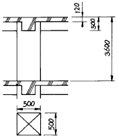
- 124.0m2
- 135.2m2
- 139.2m2
- 144.0m2
(정답률: 27%)
32. 기둥, 벽 등의 모서리에 대어 미장바름을 보호하는 철물명칭은?
- 코너비드(corner bead)
- 미끄럼막이(non-slip)
- 인서어트(insert)
- 줄눈대(joiner)
(정답률: 47%)
33. 무근콘크리트 1m3의 중량으로 맞는 것은 어느 것인가?
- 1.6ton
- 2.0ton
- 2.3ton
- 2.4ton
(정답률: 17%)
34. 콘크리트 배합설계에서 물시멘트비를 결정하는 경우에 있어서 관계가 가장 적은 것은?
- 압축강도
- 내구성
- 작업성
- 수밀성
(정답률: 14%)
35. 지붕방수용 도막재로 사용되는 재료로 거리가 가장 먼 것은?
- 우레탄고무계 방수재
- 염화비닐시트계 방수재
- 아크릴고무계 방수재
- 고무아스팔트계 방수재
(정답률: 알수없음)
36. 역구축공법(top down method)의 장점에 관한 내용으로 옳지 않은 것은?
- 일체화 시공이 쉽다.
- 흙막이로서 확실성이 보장된다.
- 인접지반의 변형을 최소화 할 수 있다.
- 공기단축을 도모할 수 있다.
(정답률: 5%)
37. 콘크리트용 부순 굵은골재의 실적률로서 옳은 것은?
- 25% 이상
- 35% 이상
- 45% 이상
- 55% 이상
(정답률: 37%)
38. 다음중 콘크리트의 워커빌리티에 직접적인 영향을 주는 인자와 가장 거리가 먼 것은?
- 단위수량
- 단위시멘트량
- 혼화재료
- 설계기준강도
(정답률: 알수없음)
39. 다음중 공사현장에서 원가절감 기법으로 많이 채용되는 것으로 가장 적당한 것은?
- 가치공학(value engineering) 기법
- LOB(line of balance) 기법
- Tact 기법
- QFD(quality function deployment) 기법
(정답률: 알수없음)
40. KS F 4002에 규정된 콘크리트 블록의 기본 크기가 아닌것은?
- 390×190×190
- 390×190×150
- 390×190×120
- 390×190×100
(정답률: 알수없음)
3과목: 건축구조
41. 조적조에서 테두리보에 대한 기술 중 틀린 것은?
- 보강블록구조의 최상층 벽으로서 바닥판을 철근 콘크리트로 할때는 테두리보를 쓰지 않아도 된다.
- 테두리보의 춤은 벽두께의 2/3 이상이어야 한다.
- 테두리보는 횡력에 대한 벽면의 직각방향의 이동으로 발생하는 수직균열을 막기 위해 설치한다.
- 테두리보는 분산된 벽체를 일체로 하여 하중을 균등하게 분포시킨다.
(정답률: 30%)
42. 지름 10mm, 길이 15m의 강철봉에 무게 800kgf의 물체를 매어 달았을 때 강철봉이 늘어난 길이는? (단, Es = 2.1× 106 kgf/cm2 이다.)
- 0.43cm
- 0.53cm
- 0.73cm
- 0.93cm
(정답률: 37%)
43. 플레이트보에서 스티프너(stiffener)를 사용하는 주된 목적은?
- 리벳(rivet)의 수를 줄이기 위하여
- 플랜지 앵글(flange angle)의 단면을 축소시키기 위하여
- 웨브 플레이트(web plate)의 좌굴을 방지하기 위하여
- 웨브 플레이트(web plate)의 부식을 방지하기 위하여
(정답률: 65%)
44. 극한 강도설계법에 의한 철근콘크리트 구조설계에서 고정 하중 및 적재하중에 대한 소요강도 중 맞는 것은? (단, D : 고정하중, L : 활하중)
- U = 1.0D+1.0L
- U = 0.9D+1.3L
- U = 1.5D+1.9L
- U = 1.4D+1.7L
(정답률: 17%)
45. 장기하중 60tf(자중포함)의 연직 하중을 받는 독립기초를 정방형으로 하려할 때 가장 경제적인 것은? (단, 허용 지내력도는 15[tf/m2]이다)
- 1.5m×1.5m
- 2.0m×2.0m
- 2.5m×2.5m
- 3.0m×3.0m
(정답률: 6%)
46. 아래 그림은 어떤 지붕의 평면인가?
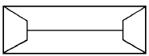
- 모임 지붕
- 합각 지붕
- 맨사드 지붕
- 반박공 지붕
(정답률: 32%)
47. 벽돌벽 1.5B의 두께는? (단, 공간쌓기 아님, 표준형벽돌 사용)
- 280㎜
- 290㎜
- 380㎜
- 390㎜
(정답률: 34%)
48. 다음 그림과 같은 구조물에서 RA = 1.5tf일 때 RC, MC의 값은?
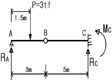
- RC = 0 tf, MC = 0 tfㆍm
- RC = 1.5 tf, MC = -7.5 tfㆍm
- RC = 0 tf, MC = 7.5tfㆍm
- RC = 0 tf, MC = -7.5 tfㆍm
(정답률: 12%)
49. 기초의 분류에서 기초판의 형식에 의한 분류로 부적당한 것은?
- 독립 기초
- 복합 기초
- 온통 기초
- 직접 기초
(정답률: 40%)
50. 조적조에서 벽량에 대한 설명 및 단위가 옳은 것은?
- 내력벽의 길이의 총 합계를 그 층의 바닥면적으로 나눈 값(㎝/m2)
- 내력벽의 길이의 총 합계를 그 층의 바닥면적으로 나눈 값(m/m2)
- 내력벽의 면적의 총 합계를 그 층의 바닥면적으로 나눈 값(㎝2/m2)
- 내력벽의 면적의 총 합계를 그 층의 바닥면적으로 나눈 값(m2/m2)
(정답률: 17%)
51. 그림과 같은 독립기초에 생기는 최대, 최소 압축 응력도의 조합으로 적당한 것은?
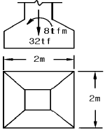
- 16tf/m2, 1tf/m2
- 14tf/m2, 2tf/m2
- 10tf/m2, 4tf/m2
- 10tf/m2, 6tf/m2
(정답률: 19%)
52. 그림과 같은 하중을 받는 캔틸레버에서 최대 휨응력도의 값은?
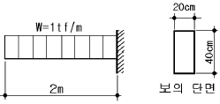
- 1500㎏f/㎝2
- 75㎏f/㎝2
- 1.875㎏f/㎝2
- 37.5㎏f/㎝2
(정답률: 알수없음)
53. 목조 마루에 관한 설명 중 옳지 않은 것은?
- 2층 마루는 구조상 동바리마루, 홑마루, 보마루 세가지로 구분한다.
- 납작마루에서는 동바리를 사용하지 않는다.
- 외벽의 마루바닥 밑부분에는 환기구를 설치하도록 한다.
- 보마루는 보를 걸어 장선을 받게 하고 그 위에 마루널을 깐 것이다.
(정답률: 0%)
54. 단근장방형보에 대한 강도설계법에서 균형철근비 ρb = 0.034, b = 300mm, d = 500mm일 때 최대 인장철근량으로 옳은 것은?(단, 항복강도 Fy=400)(2022년 03월 07일 확인된 규정 적용됨)
- 5100.6mm2
- 4590.6mm2
- 4080.6mm2
- 3702.6mm2
(정답률: 9%)
55. 그림과 같은 단면에서 도심축인 n - n축에 대한 단면2차 반경값은?
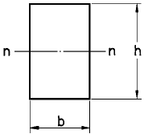
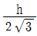
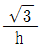
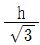
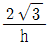
(정답률: 알수없음)
56. 그림과 같은 보의 최대 전단응력도로 옳은 것은?
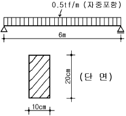
- 11.25㎏f/㎝2
- 10.0㎏f/㎝2
- 5.625㎏f/㎝2
- 5.0㎏f/㎝2
(정답률: 14%)
57. 그림은 극한강도설계법에서 단근장방형보의 응력도를 표시한 것이다. 압축력 C값으로 옳은 것은? (fck = 21MPa, fy = 400MPa, b = 350mm, 1MPa = 10kgf/cm2, 1kgf = 10N)
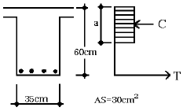
- 1100kN
- 11⑤kN
- 1150kN
- 1200kN
(정답률: 19%)
58. 벽돌구조의 아치(arch)에 대한 기술 중 옳지 않은 것은?
- 부재의 하부에 인장력이 생기지 않게 구조한 것이다.
- 창문의 나비가 1m 정도일 때는 평아치로도 할 수 있다.
- 문꼴나비가 2m 이상으로 집중하중이 올 때는 인방보 등을 써서 보강한다.
- 아치벽돌을 특별히 주문 제작하여 만든 것을 거친아치라고 한다.
(정답률: 22%)
59. 아래 구조물의 부정정차수는?
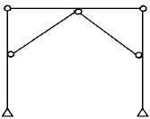
- 1차
- 2차
- 3차
- 4차
(정답률: 25%)
60. 말뚝에 관한 기술 중 틀린 것은?
- 철제말뚝은 중량이 가볍고 사용길이에 제한을 받지 않으므로 70m 이상의 깊이까지도 이어박을 수 있다.
- 기성 콘크리트 말뚝 간격은 75㎝ 이상
- 레진(resin)콘크리트 말뚝은 내열성이 크며, 강재를 사용한 용접이 가능하다.
- 제자리 콘크리트 말뚝 간격은 90㎝ 이상
(정답률: 15%)
4과목: 건축설비
61. 다음 도시가스 옥내배관에 관한 설명 중 틀린 것은?
- 공용내관은 은폐배관을 원칙으로 한다.
- 배관은 원칙적으로 직선, 직각으로 한다.
- 다른 건물의 부지 아래 또는 바닥 아래에 매설해서는 안된다.
- 전등선, 전화선, 라디오의 어스 및 기타 전기 공작물과는 일정 거리이상 이격시킨다.
(정답률: 알수없음)
62. 공기조화설비에 관한 기술 중 부적당한 것은?
- 팬코일 유닛 방식에서 각 실의 유닛은 수동으로도 제어할 수 있고, 개별 제어가 쉽다.
- 흡수식 냉동기는 크게 증발기, 압축기, 발생기, 응축기의 4개 부문으로 구성되어 있다.
- 필요 축열량이 같은 경우 빙축열방식은 수축열방식에 비해 축열조 크기가 작다.
- 변풍량방식은 정풍량방식에 비해 송풍기의 에너지 소비량을 줄일 수 있다.
(정답률: 알수없음)
63. 설비기호 중 콕(Cock)의 일반적인 도시기호는?
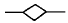
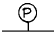
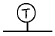
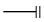
(정답률: 알수없음)
64. 보일러의 용량결정과 직접적인 관계가 없는 것은?
- 예열부하
- 급탕부하
- 냉방부하
- 배관의 열손실
(정답률: 10%)
65. 인터폰의 설명 중에서 옳은 것은?
- 모자식은 1대의 모기를 중심으로 여러 대의 자기를 접속하는 방식으로 배선이 복잡하지만 사용빈도가 많은 곳에 적당하다.
- 복합식은 모기 상호간에 임의로 통화가 가능하며, 각 모기에 접속된 모자간의 통화도 할 수 있다.
- 상호식은 모자식에서 자기만을 조합하여 접속하는 방식으로 어느 기기에서나 임의의 기기로 통화가 가능하다.
- 프레스 토크 방식은 스위치의 조작이 불필요하며, 항상 서로 이야기하며 동시에 들을 수 있다.
(정답률: 알수없음)
66. 50 칸델라(candela)의 광원점에서 2[m]의 거리에 있는 직각의 면과 30° 경사된 평면상의 조도는?
- 6.3[lx]
- 10.8[lx]
- 12.5[lx]
- 14.4[lx]
(정답률: 16%)
67. 1개의 루프통기관에 의하여 통기할 수 있는 위생기구의 수는 얼마 이내인가?
- 4개
- 6개
- 8개
- 10개
(정답률: 0%)
68. 다음 중 예열시간은 짧고 간헐 운전에 적합하지만 방열기의 표면온도가 높아 유치원의 난방에는 부적합하며 스팀 해머링이 발생할 수 있는 난방방식은?
- 증기 난방
- 온수 난방
- 고온수 난방
- 복사 난방
(정답률: 60%)
69. 건물의 에너지 절약에 직접적으로 관계되는 내용이 아닌것은?
- 건물의 방위
- 건물의 외벽면적
- 소음, 방진 설계
- 보일러 효율
(정답률: 39%)
70. 전기배선공사 중 금속관공사의 시공에 관한 설명으로 옳지 않은 것은?
- 관 및 부속품의 내면 및 말단 개구부는 평활하게 하여 전선의 피복을 손상하지 않도록 한다.
- 전선의 삽입은 콘크리트벽 등이 어느 정도 건조하고 나서 행한다.
- 관내를 청소하여 수분을 제거한 다음 전선을 삽입한다.
- 목조 건물의 라스 모르타르바름벽 안에 파이프를 통하거나 관통시킬 때는 라스에 파이프가 고정되도록 밀착하여 잘 묶는다.
(정답률: 0%)
71. 다음 중 공조방식의 분류에서 전공기 방식이 아닌 것은?
- 단일덕트 정풍량 방식
- 단일덕트 변풍량 방식
- 2중 덕트 방식
- 팬코일 유닛 방식
(정답률: 알수없음)
72. 접지공사에 대한 기술로서 옳지 않은 것은?
- 기기 절연물이 손상되었을 때 감전 방지의 목적으로 사용한다.
- 1종 접지공사는 400V 이하의 저압용 기계기구의 금속제 외함 등 전압의 위험도가 낮은 공사에 사용된다.
- 접지선을 철주나 그 밖의 금속체에 따라 시설하는 경우에는 접지극을 지중에서 금속체로부터 1m 이상 떨어지도록 매설한다.
- 금속제 수도관을 접지공사의 접지극으로 사용할 수 있다.
(정답률: 0%)
73. 일반적으로 유체의 부력에 의해 밸브가 자동적으로 개폐되는 자동밸브는?
- 체크밸브
- 리프트밸브
- 트랩
- 볼탭
(정답률: 알수없음)
74. 고가수조방식을 채택한 목욕탕 건물에서 최상층에 세정밸브가 설치되어 있을 때, 이 세정밸브로부터 고가수조 저수면까지의 필요 최저 높이는? (단, 세정밸브의 최저 필요 압력은 0.7kg/cm2이며, 고가수조에서 세정밸브까지의 총마찰손실수두는 4mAq이다.)
- 4.7m
- 7.4m
- 11m
- 28m
(정답률: 25%)
75. 다음 중 포집기와 사용장소의 연결이 가장 옳지 않은 것은?
- 가솔린 포집기-주유소
- 샌드 포집기-주차장
- 플라스터 포집기-치과의 기브스실
- 런드리 포집기-주방
(정답률: 30%)
76. 직류발전기의 전력 P[W]를 구하는 식으로 옳은 것은? (단, I는 전류, V는 전압, PF는 역률을 나타냄)
- P = I×V
- P = I×V×PF
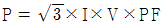
- P = (V/ I)×PF
(정답률: 8%)
77. 난방부하를 줄이기 위한 방법이 아닌 것은?
- 적절한 난방설계용 외기조건을 채용한다.
- 적절한 실내 온·습도 조건을 채용한다.
- 침입 외기량을 줄인다.
- 내부 발열요소를 없앤다.
(정답률: 42%)
78. 앵글밸브(angle valve)에 대한 설명으로 옳지 않은 것은?
- 앵글밸브는 게이트밸브(gate valve)의 일종이다.
- 글로브 밸브보다 감압현상이 적다.
- 유체의 흐름을 직각으로 바꿀 때 사용된다.
- 옥내 소화전의 개폐밸브로 이용된다.
(정답률: 10%)
79. 습공기선도에 나타나는 사항이 아닌 것은?
- 노점온도
- 습구온도
- 절대습도
- 열관류율
(정답률: 28%)
80. 다음 중 옥내배선에 사용되는 전선의 규격 결정시 고려사항과 가장 거리가 먼 것은?
- 전선의 기계적 강도
- 전선의 허용전류
- 전압 강하
- 송전 방식
(정답률: 20%)
5과목: 건축관계법규
81. 그림과 같은 도로 모퉁이에 있을 때 건축선의 후퇴길이 “a”는?
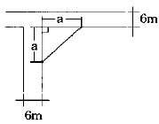
- 2m
- 3m
- 4m
- 5m
(정답률: 47%)
82. 주차전용 건축물에서 당해 건축물의 연면적에 대한 주차장의 용도로 사용되는 부분의 비율이 가장 적은 용도는?
- 판매 및 영업시설
- 제1종 근린생활시설
- 의료시설
- 업무시설
(정답률: 28%)
83. 다음 중 면적 및 높이의 산정을 함에 있어 지표면과 관계가 없는 것은?
- 반자높이
- 처마높이
- 건축면적
- 건축물의 높이
(정답률: 19%)
84. 계단의 양쪽에 벽 등이 있어 난간이 없는 경우에 손잡이를 설치하여야 하는 건축물의 용도가 아닌 것은?
- 호텔
- 신문사
- 장례식장
- 도매시장
(정답률: 7%)
85. 공개공지 등의 확보대상 지역에서 공개공지를 설치해야하는 건축물의 대상용도가 아닌 것은? (단, 연면적의 합계가 5000m2이상)
- 문화 및 집회시설
- 판매 및 영업시설(농수산물유통시설은 제외)
- 업무시설
- 운동시설
(정답률: 알수없음)
86. 피뢰설비의 기준 중 인하도선 사이의 간격은?
- 50미터 이하
- 50미터 이상
- 100미터 이하
- 100미터 이상
(정답률: 28%)
87. 건축법상 층의 구분이 명확하지 아니한 건축물의 층수를 산정함에 건축물의 높이 몇 미터마다 하나의 층으로 산정하는가?
- 2.4미터
- 3.0미터
- 4.0미터
- 4.5미터
(정답률: 34%)
88. 다음 건축물 중 주요구조부를 내화구조로 하여야 하는 것은?
- 위락시설중 주점의 바닥면적이 200m2인 것
- 숙박시설의 바닥면적이 300m2인 것
- 관광휴게시설의 바닥면적이 400m2인 것
- 공장의 바닥면적이 500m2인 것
(정답률: 10%)
89. 노외주차장인 주차전용건축물의 대지면적 최소한도는 얼마까지 정할 수 있는가?
- 33m2 이상
- 40m2 이상
- 45m2 이상
- 50m2 이상
(정답률: 8%)
90. 도시계획시설 또는 도시계획시설예정지에 건축을 허가할 수 있는 가설건축물의 기준이 아닌 것은?
- 층수
- 건축면적
- 존치기간
- 구조
(정답률: 알수없음)
91. 다음 중 부설주차장의 설치 의무가 면제될 수 있는 시설물은?
- 연면적 10000m2인 판매 및 영업시설
- 연면적 10000m2인 문화 및 집회시설중 공연장
- 연면적 15000m2인 숙박시설
- 연면적 15000m2인 업무시설
(정답률: 알수없음)
92. 건축법에 따라 채광 및 환기를 위한 창문 또는 설비를 의무적으로 설치해야 할 대상이 아닌 것은?
- 학교의 교실
- 업무시설의 사무실
- 숙박시설의 객실
- 의료시설의 병실
(정답률: 46%)
93. 비상용승강기 승강장의 구조에 관한 기준으로 옳지 않은 것은?
- 승강장은 각층의 내부와 연결될 수 있도록 하되, 그 출입구(승강로의 출입구를 제외)에는 갑종방화문을 설치할 것
- 벽 및 반자가 실내에 접하는 부분의 마감재료는 불연 재료로 할 것
- 노대 또는 내부를 향하여 열 수 있는 창문을 설치할 것
- 피난층이 있는 승강장의 출입구로부터 도로 또는 공지에 이르는 거리가 30미터 이하일 것
(정답률: 43%)
94. 시설면적이 30000m2이고, 정원이 40000명인 관람장의 부설주차장 주차 대수는?
- 150대
- 200대
- 300대
- 400대
(정답률: 14%)
95. 건축물의 내부에 설치하는 피난계단의 구조에 관한 기술 중 틀린 것은?
- 계단실의 실내에 접하는 부분의 마감은 불연재료 또는 준불연재료로 할 것
- 계단실에는 예비전원에 의한 조명설비를 할 것
- 건축물의 내부와 접하는 창문 등은 망이 들어 있는 유리의 붙박이창으로서 그 면적을 각각 1m2 이하로 할 것
- 건축물의 내부에서 계단실로 통하는 출입구의 유효너비는 0.9m 이상으로 할 것
(정답률: 알수없음)
96. 배연설비를 하여야 하는 건축물에 설치하여야 하는 배연창의 유효면적은?
- 0.5m2 이상으로서 그 면적의 합계가 당해 건축물의 바닥면적의 1/1000 이상일 것
- 1m2 이상으로서 그 면적의 합계가 당해 건축물의 바닥면적의 1/1000 이상일 것
- 0.5m2 이상으로서 그 면적의 합계가 당해 건축물의 바닥면적의 1/100 이상일 것
- 1m2 이상으로서 그 면적의 합계가 당해 건축물의 바닥면적의 1/100 이상일 것
(정답률: 40%)
97. 노외주차장에서 주차대수 규모가 몇 대 이상인 경우의 경사로는 너비 6m이상인 2차선의 차로를 확보하거나 진입차로와 진출차로로 분리해야 하는가?
- 30대 이상
- 50대 이상
- 100대 이상
- 300대 이상
(정답률: 44%)
98. 건축법상 문화 및 집회시설의 용도분류에 따른 관계가 잘못된 것은?
- 공연장- 극장
- 집회장- 예식장
- 관람장- 경마장
- 동ㆍ식물원 - 화초 및 분재 등의 온실
(정답률: 알수없음)
99. 노외 주차장의 출구 및 입구를 설치할 수 있는 장소는?
- 횡단보도에서 5m되는 도로의 부분
- 너비 3.5m의 도로
- 종단구배가 10%인 도로의 부분
- 노인복지시설의 출입구로부터 20m 되는 도로의 부분
(정답률: 19%)
100. 주요구조부가 내화구조인 25층 아파트의 경우 거실 각 부분으로부터 직통계단까지의 최대 보행거리는 몇 m이하인가?
- 30m 이하
- 40m 이하
- 50m 이하
- 60m 이하
(정답률: 알수없음)